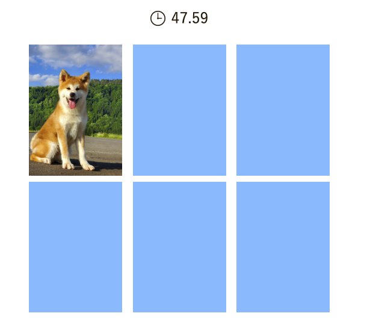

制作ポイント
React＋TypeScriptで記憶カードゲームを制作しました。以下の点を特に工夫しています。
状態管理の整理
カードの状態、レベル、タイマーなど、役割ごとに useState を分けて管理しています。
関連するstateはオブジェクトとして一つにまとめることで読みやすく保守性の高い構成にしました。
タイマーの精度向上
0.01秒単位のタイマーを setInterval で実装。浮動小数点誤差を抑えるため Math.round と .toFixed(2) を併用して安定した表示を実現しました。
ゲーム性とUXへの配慮
難易度によってカード数が変わり、プレイの幅が広がる設計。操作のタイミングやアニメーションも自然になるよう微調整しています。
styled-componentsで動的な見た目に
カードをひっくり返したり、全て正解した時などの状態に応じて見た目を切り替え、ReactのPropsとスタイルが連動するよう工夫しました。
担当範囲
コーディング, デザイン
使用言語・フレームワーク等
React, JavaScript / TypeScript, HTML, CSS, Photoshop
対応機種
PC
page top